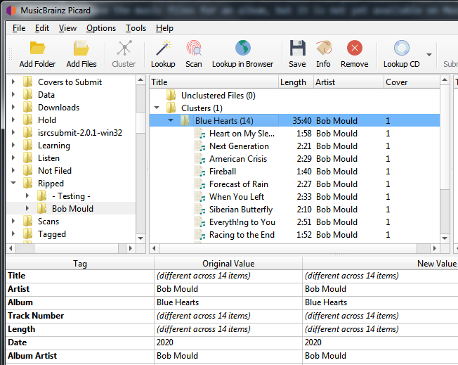
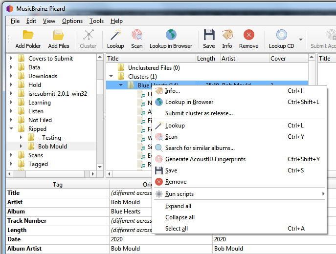

Submitting Cluster as a Release
Picard can assist you in submitting information to the MusicBrainz database by automatically populating the submission form on the website with data from your files. This is typically used when you have the music files for an album, but it is not yet available on MusicBrainz.
Submitting multiple tracks as a cluster
To use this functionality, the steps to follow are:
1. Load the files
Drag the batch of files to process from the browser pane to the “Unclustered Files” section in the clustering pane.

2. Cluster the files
Select the files in the clustering pane and combine them into album clusters using the command. Picard will attempt to cluster the files based on their existing metadata. Depending on the quality of the metadata, you may need to manually add items to the cluster or remove items from the cluster to ensure that it is complete for the album, and does not contain any additional files.

{kind=link}
3. Submit the cluster
Once you have the proper files in the cluster and it is complete for the album, you can submit it to MusicBrainz by selecting the cluster and right-click to bring up the context menu. From there you should see an option to .

{kind=link}
4. Confirm submitted information
{kind=link}
5. Complete the submission
Selecting Continue will open an “Add Release” edit screen with the fields populated with your information. From here you can check and submit your edit as if you had entered all of the information manually.
Note
Before submitting the edit, you should check that all of the information has been correctly entered in accordance with the MusicBrainz Style Guides and that the artist and release groups have been matched to existing items as appropriate. You should also add an edit note citing the source of the information.
Submitting a single track
You can also use this feature to submit a single track as a release or as a standalone recording. To do this, right-click the file and select either or as appropriate. Again, be sure to confirm the information has been correctly entered in accordance with the MusicBrainz Style Guides and that the artist and release groups have been matched to existing items as appropriate. You should also add an edit note citing the source of the information.